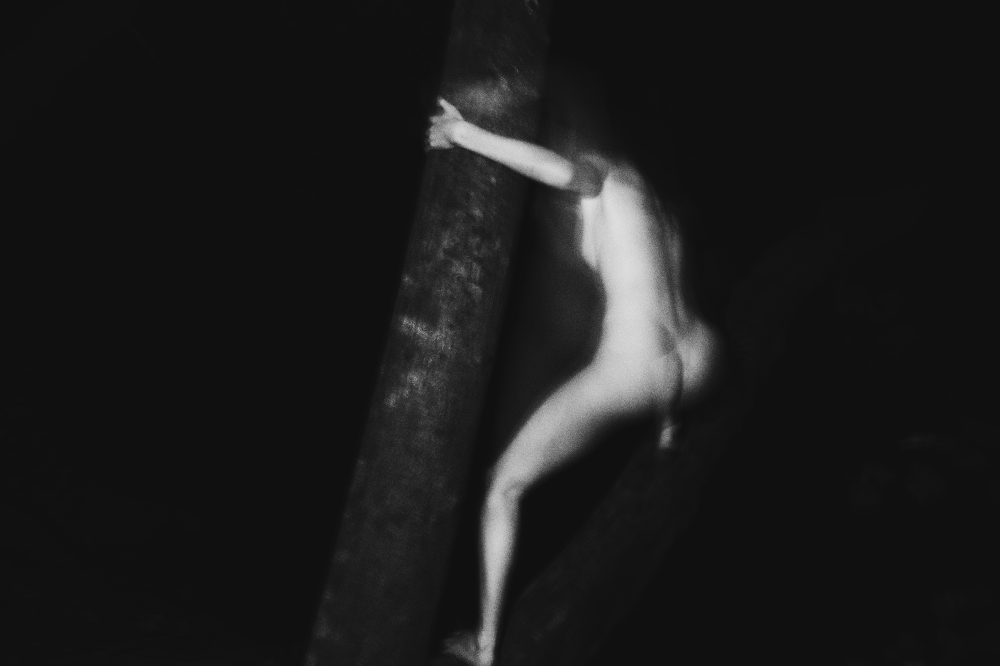

Alejandro Molinari.
Berlin-based photographer and music producer. His work explores night flash, forest studies, the human figure and intimate interiors, photographed with Fujifilm and Canon cameras.
Working with photography since around 2009, he moves between Polaroid, Canon and Fujifilm X-T50. He is drawn to the imperfect texture of analogue images, night-flash portraits of artists and figures appearing almost like creatures in the forest after dark.
His father, Oscar Molinari Herrera (1941–2017), was an Italian-Venezuelan pioneer of experimental cinema, photography and video art.
Read the storyClose the story
His award-winning short Ojo de agua (1972) became part of Venezuela’s 1970s avant-garde. While spending time in Cadaqués in the early 1970s, Oscar developed a lasting friendship with Salvador Dalí. According to family recollections, they met almost daily during those stays, with Dalí becoming an informal artistic mentor.
Alejandro grew up hearing stories of their time together, an encounter between generations that became part of his family's artistic memory. In 1973, Oscar co-founded the Taller de Cine Independiente in Caracas. He later worked across Polaroid, video and photographic narratives with Alejandro Jodorowsky.